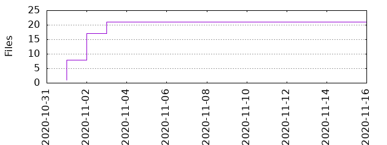

Files
General
Activity
Authors
Files
Lines
Tags
Total files
22
Total lines
1322
Average file size
1336.32 bytes
File count by date

Extensions
Extension
Files (%)
Lines (%)
Lines/file
ini
2 (9.09%)
74 (5.60%)
37
mako
1 (4.55%)
24 (1.82%)
24
md
1 (4.55%)
19 (1.44%)
19
py
11 (50.00%)
501 (37.90%)
45
txt
2 (9.09%)
96 (7.26%)
48
yml
1 (4.55%)
278 (21.03%)
278